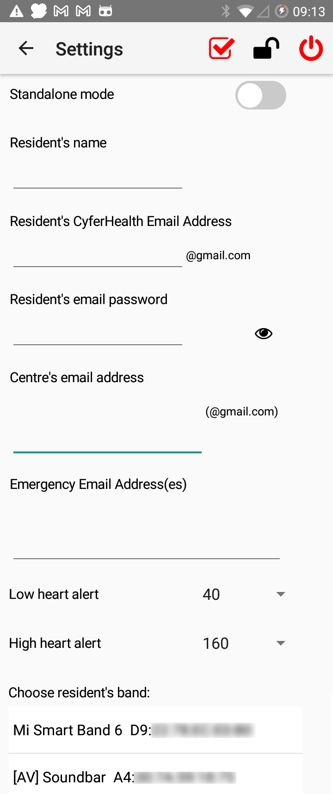
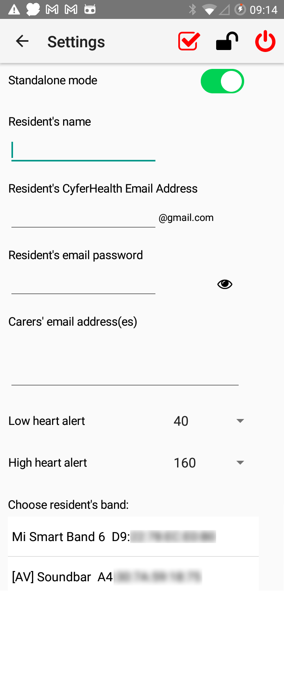
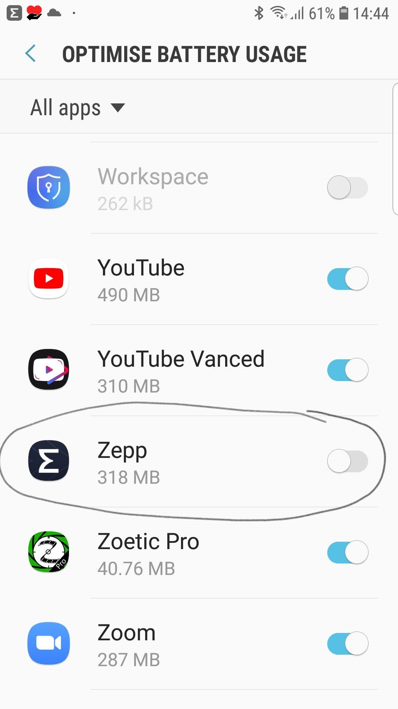
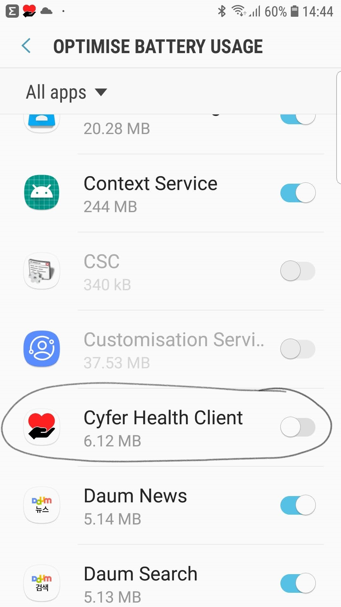

Cyfer Health uses GMail to communicate. Whilst, any GMail account could be used, it is best to create a dedicated GMail account for Cyfer Health. (Using a dedicated account removes any concerns around privacy and possible bugs that might alter/delete emails in an existing GMail account.) Create such an account, choose Two Factor Authentication, and create an application specific password to be used by Cyfer Health. Detailed steps showing how to do this can be found here
Once you have the GMail information, start the Cyfer Health app. You should be taken to the settings screen. If not, or you have a need to make changes at a later date, tap the gear icon in the top right corner.
First, specify whether you will be running Cyfer Health in stand-alone mode. If the app will be running at part of an organisation-wide Cyfer Health installation with a central Cyfer Health email address then make sure stand-alone mode is not enabled. If you will be running Cyfer Health with just one person being monitored and with one or more individuals receiving the alerts, make sure stand-alone mode is selected.
 Now, depending on the mode of operation, enter the following information:
By tapping the padlock icon at the top of the screen, it is possible to lock this settings screen so that the settings can't be changed. If this restriction is desired, tap the padlock and specify a 4 digit pin that will be required to re-enter this screen. If you ever wish to remove the lock, enter the pin: 0000.
Tap the checkbox at the top of the screen to test the settings. Whenever you change any of the email related settings, you will be required to initiate this test before leaving the settings screen.
To exit the app and stop monitoring the band, tap the red power button.
Depending on which version of Android you are using and how it is configured, you may find that Cyfer Health and/or (Mi Fit / Zepp) gets terminated after a few hours of use. To prevent this, go into Android's app settings, find the entry for the apps and turn off battery optimisation. Depending on your version of Android, this process will look different to the following screenshots and there may be other Android settings that need to be made to prevent the apps being terminated.
 